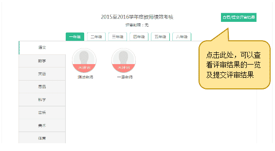
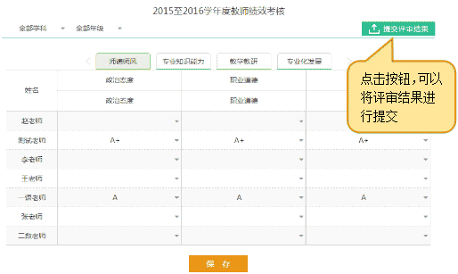

3.3.6 参与评审
评审开始后，点击“考核评审”的“参与评审”（图3.3.2-2）即可进入“评审结果一览”页面（如图3.3.6-1）。在此页面可以查看到对各位教师的评审状态，评委可以点击教师进行评审（如图3.3.6-2）。
在评审页面，评委根据教师填报的数据，对每个考核要素进行评审，只需打A+、A、B+、B、C、D等即可，方便快捷。
对全部教师打完等级后，点击图3.3.6-1中右上角的“查看/提交评审结果”按钮进行一览（如图3.3.6-3）。评委可以在此页面，对各位教师各考核要素的评审结果进行对比和修正。全部修改完成后，点击“提交评审结果”按钮即可完成此次的评审。
